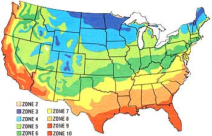

Fall's fluttering showers of golden leaves begin their ancient dance, as weighty apples bend pliant boughs. And then, one morning, the grass nods heavy with a hoary frost. Drink in the crisp autumn air, gather your share of nature's bounty, and-while cover crops green in the autumnal fields-enjoy the rewards of your spring and summer labor.
ZONES 3 AND 4. It's too late to plant any more succession crops this year: Killing freezes are just around the corner. But if you didn't get season-long production from your garden this past summer it's R3. too early t2 start planning for next year. When doing so, we think you'll find Duane Newcomb's Growing Vegetables the Big Yield/Small Space Way (J.P. Tarcher, $7.95, available in many bookstores) to be especially useful. The volume is simply chock-full of advice on how to maximize garden yields.
ZONE 5. With an average first frost date of October 10, there's not enough time for most crops to mature. Corn salad, garden cress, and radishes should do well if planted before September 15 ...and a short-season lettuce or an early spinach sown right at the beginning of the month could provide the makings for some delicious autumnal salads. Of course, you can try extending the season, using the new chicken-wirereinforced plastic to make instant tunnel cloches. (Information on this handy material is available from Gilbert & Bennet, Dept. TMEN, Georgetown, Connecticut 06829 or Blue Island, Illinois 60406.)
ZONE 6. You folks have got a bit more time left than your northern cousins have ...since your first frost is scheduled to arrive about October 20. Mustard greens and endive can be added to the Zone 5 vegetables, and the radish-planting season can be stretched clear to October 1. You might also want to plant an early turnip variety, such as Tokyo Cross, in the first week of September and reserve a date in October for a meal of buttered turnips!
ZONE 7. October is essentially frost-free in most parts of your zone, so-in the first few days of September-you can plant beets, Swiss chard, kale, and kohlrabi ...and transplant collards and cabbages. Up to the middle of the month, sow Chinese cabbage, parsley (soak the seeds overnight in warm water to hasten germination), peas, and turnips ...and set out seedlings of head lettuce. Leaf lettuce can be planted until October 1, and radishes and mustard greens will still have time to produce if you get them in by October 15.
ZONE 8. There's plenty of gardening left for you folks, since frost generally doesn't arrive until November 10. Right at the beginning of September sow snap beans, broccoli, brussels sprouts, and carrots ...and transplant cauliflower. Swiss chard, kale, and kohlrabi can be planted until midmonth, while October 1 is the deadline for the following crops: beets, Chinese cabbage, leaf lettuce, and shallots. You can put in garlic cloves, and transplant heading lettuce seedlings until October 15 ...and plant radishes, peas, and mustard greens up to November 1.
ZONE 9. Gardeners here will find things cooling a bit in the early fall, but that December 1 frost is still a long way off. Plant limas, snap beans, cukes, okra, blackeyed peas, and potatoes by September 15. Summer squash that's sown in the first few days of the month will mature, and there's a good chance that tomato, pepper, and eggplant transplants that go into the soil by the first week of October will crop well for you. Of course, you can also grow everything that your northern neighbors are hurrying into the ground: Just add about 15 days to their last planting dates.
ZONE 10. You folks are in the catbird seat, as your second (or third!) season in the garden comes up. Just add two weeks to the Zone 9 planting deadlines, and prepare to enjoy your nearly year-round vegetable plot.
After the harvest ...that's the time to start planting! Yup, the last succession seeding of this year's garden is also the first crop of next year's. A fall cover of winter rye and hairy vetch will grow a bit this autumn, protect your garden against erosion during the winter, and then resume growth in those first warm days of spring (when it's still too wet to work the earth). By the time the soil is dry enough for filling, you'll have a fine stand of green manure: a nitrogen-rich legume (the vetch) and a good, bulky grass (the rye). Simply till the greenery under, and you'll have enriched soil and improved tilth.
We've found that one pound each of winter rye (not rye grass) and hairy vetch will seed 600 square feet nicely. Simply rake the empty garden beds smooth and-after inoculating the vetch with the bacteria that cause nitrogen-rich nodules fo form on the plants' roots-broadcast the seed, and water the plot well. The rye will germinate first, and serve as a nurse crop for the vetch.
You can purchase seed at many farmers' co-ops ...orby mailfrom Park Seeds, Dept. TMEN, P.O. Box 31, Greenwood, South Carolina 29647. The inoculant is Catalog No. 6206, and costs $1.25 (the regular bacteria you use on peas and beans won't, alas, work with vetch). Park also sells winter rye grain seed for $2.25 a pound (Catalog No. 5848), and hairy vetch seed for $2.70 a pound (Catalog No. 5849). Why not grow some fertilizer this fall?
|
 |
|
|